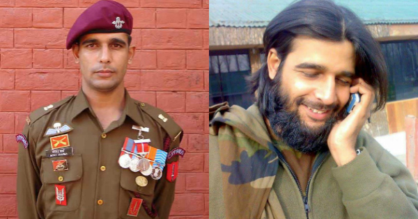

Major Mohit Sharma 1 Para SF
13 January 1978-21 March 2009
"The enemies are only 50 yards from us. We are heavily outnumbered. We are under devastating fire. I shall not withdraw an inch but will fight to our last man and our last round."
Biography
Maj. Mohit Sharma was born on 13th January 1978 (Friday) at 10.30 PM in Rohtak, Haryana.
He was the second child of his parents Mr. Rajendra Prasad Sharma and Mrs. Sushila Sharma.
Maj. Mohit Sharma was fondly called ‘CHINTU’ by his family members and ‘MIKE’ by his course mates and colleagues.
Hobbies: A through Michael Jackson fan , he was very good at playing guitar, mouth organ and synthesizer,
in fact any new instrument he came across, he took it as a challenge to get mastery of and made sure he could
play it to perfection. He never hesitated to give live performances and enthralled his listeners with his
beautiful voice, singing Hemant Kumar’s songs as well as play them on his mouth organ.
Education: He started his education from Manav Sthali School, South Extension Delhi,
after which he took admission in Holy Angels’ School, Sahibabad for a year and from where he took admission
in DPS Ghaziabad in the year 1988 and passed out from the school in the year 1995.
After scoring good percentage in class XII his parents got him admitted to Shri
Sant Gajanan Maharaj College of Engineering , Shegaon, Maharashtra. Despite taking admission
in an engineering college he had a passion to join the forces and for which he was determined
and left engineering and joined the prestigious NATIONAL DEFENCE ACADEMY in the year 1995.
Commando Life
Join para commando: From the very beginning he wanted to be a para commando and joined 1 PARA (SF) -the elite force of the Indian Army in June 2003. After that he served in Kashmir with 1 Para (SF) where he was awarded Sena Medal (Gallantry) in year 2004. He served as an instructor at the Commando Wing Belgaum for 2 years from January 2005 to December 2006. After returning back from Kashmir he was stationed at Nahan from where he again moved to Kashmir in October 2008 and it was this tenure that he laid down his life for his motherland and attained immortality on 21st march 2009. On 21 March 2009, Major Mohit Sharma while leading assault team in Kupawara district, J&K, received input of presence of terrorists in Haphruda forest. Major Mohit planned and led his commandos in tracking the terrorists. On observing suspicious movement he alerted his team. Suddenly terrorists started firing indiscriminately from all three directions. In the heavy exchange of fire, four of the commandos were critically injured. With complete disregard to his safety he pulled two of his team mates. Later he threw grenades and killed two terrorists however in the ensuing fire fight he got shot in the chest. Realising further danger to his comrades, he charged in and killed two more terrorists. This was a daring act of valour wherein he rescued two more of his team mates and killed four terrorists. However, during the fierce encounter Maj Mohit made the supreme sacrifice and was posthumously awarded the Ashoka Chakra